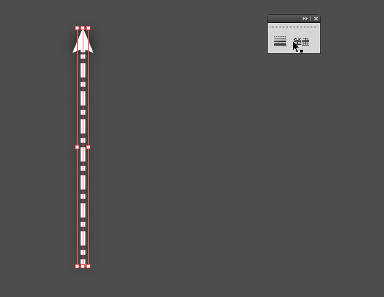

多樣化以拉箭頭
筆畫面板的小天地
以拉可以透過筆畫形式，讓一個線段變成虛線的箭頭，這些變更的選項一開始都處於隱藏的狀態。首先要將隱藏的選項展開。

展開筆畫面板的小天地
數值的設定
筆畫的面板出來後，便可以去對虛線、箭頭等形式作調整，通常箭頭的部分沒調整縮放的話會顯得過大、失衡。當把端點調成圓形、虛線的長度調成0時，整條虛線會變成一堆圓點，圓點的長度會跟筆畫寬一樣，因此若要圓點不會相連在一起，就要把間隔條成比寬度要大的數值。
箭頭右邊的選項可以對調箭頭所在的端點
空心的箭頭
這是一種一去不復返的加工，弄成空心形之後要再改箭頭的路徑會變得很麻煩，最好在確認不會變更之後或先複製一個在原地貼上，再使用空心箭頭的步驟。
選取線段，使用物件>路徑>外框筆畫(alt>O>P>U)，讓線段變成實體路徑，此時箭頭會與線分開變成兩個物件，要先用路徑管理員把他們合併。反轉填色跟筆畫，再調整筆畫寬度就可以獲得空心箭頭。
外形之外，顏色也是區分箭頭的方法之一，若箭頭用什麼顏色都會隱身於背景之中，可以用特效內的外光暈，給他圍繞一層薄薄的淡彩。